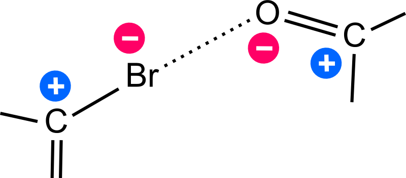

Přednáška z 34. Letní školy pro středoškolské pedagogy a studenty středních škol.
Vytvořeno pomocí Reveal.js.
Pro prohlížení použijte šipku doprava.
LÁSKA, SEX A ROCK'N'ROLL MEZI
MOLEKULAMI
Michal H. Kolář
25. srpna 2020
http://mhko.science/molekula
http://mhko.science/contact
LÁSKA, SEX A ROCK'N'ROLL MEZI
MOLEKULAMI
Michal H. Kolář
26. srpna 2020
http://mhko.science/molekula
http://mhko.science/contact
Neexistuje jednoznačná odpověď na otázku:
„Co je to molekula?“
Filozoficko-matematická část
definice pojmu M O L E K U L A
chemická vazba
elektronová hustota
Několik meziatomových interakcí k večeři
vodíková vazba, Londonova disperze, hydrofobní efekt, sigma-díry
Co je to molekula?
Skupina 1
Skupina 1
10 jader C
5 jader H
1 jádro Br
112 elektronů
brombenzen
Skupina 2
Skupina 2
10 jader C
18 jader H
1 jádro O
146 elektronů
geraniol
Skupina 3
Skupina 3
10 jader Ne
100 elektronů
klastr neonu
Skupina 4
Skupina 4
10 jader C
16 jader H, 136 elektronů
adamantan
Skupina 5
Skupina 5
4 jádra C
8 jader H
4 jádra O
88 elektronů
dimer kys. octové
Amadeo Avogadro (1811)
[Molekula je] nejmenší část, na kterou lze látku rozdělit, aniž bychom zničili její chemický charakter.
Definice IUPAC (1994)
[Molekula je] elektricky neutrální částice složená z více než jednoho atomu (n>1). Přísně vzato, molekula, ve které n>1, musí odpovídat snížení na ploše potenciální energie dostatečně hlubokému, aby uzavíralo alespoň jeden vibrační stav.
An electrically neutral entity consisting of more than one atom (n>1). Rigorously, a molecule, in which n>1 must correspond to a depression on the potential energy surface that is deep enough to confine at least one vibrational state.
| Avogadro | ✔ | ✔ | ✘ | ✔ | ✘ |
| IUPAC | ✔ | ✔ | ✘ | ✔ | ✔ |
| Publikum | ? | ? | ? | ? | ? |
„Chemická vazba“

„Chemická vazba...“
- ... je přitažlivá interakce mezi atomy.
- Při vzniku vazby musí dojít ke snížení potenciální energie.
- Umíme měřit vzdálenosti (délku vazby), energii jen někdy.
- Vzdálenost i energie prakticky spojité.
- Neumíme měřit násobnost chemické vazby.
- Neumíme měřit kovalentnost, iontovost, dativnost atp.
- Neumíme měřit parciální náboje.
Elektronová hustota
Elektronová hustota ρ
Fyzikální veličina, která je úměrná pravděpodobnosti nalezení elektronu v prostoru.
Závisí pouze na 3 souřadnicích.
ρ = ρ(x, y, z)
Pomocí ρ lze vybudovat celou kvantovou teorii atomů a molekul (Hohenberg, Kohn, 1964).
ρ brombenzenu
log(ρ)
log(ρ)
ρ je měřitelná veličina!
CuSO4, 1912
penicilin, 1945
objekt 17631, History of Science Museum, Oxford University
objekt 17631, History of Science Museum, Oxford University
Dorothy Hodgkin, Daily Herald Archive/National Science & Media Museum/SSPL
SARS-CoV-2 Spike protein S1, 2020
Nobelovy ceny
- Laue (1914, F) ohyb RTG záření na krystalech
- Braggové (1915, F) krystalografie
- Born (1954, F) statistická interpretace kvantové teorie
- Perutz, Kendrew (1962, Ch) krystaly proteinů
- Crick, Watson, Wilkins (1962, Med) DNA
- Hodgkin ( 1964, Ch) struktura penicilinu a B12
- Kohn (1998, Ch) teorie funkcionálu hustoty
- Ramakrishnan, Steitz, Yonath (2009, Ch) krystaly ribozomu
- Dubochet, Frank, Henderson (2017, Ch) kryoelektronová mikroskopie
Úspěch IBM (a Maxwellův omyl)
Gross et al. The chemical structure of a molecule resolved by atomic force microscopy, Science 2009
Baderova analýza
Spektrum meziatomových interakcí
Vodíková vazba
Zásadní pro strukturu a funkci biomolekul.
- 2,5 vodíkové vazby na pár bazí v DNA
- 1,1 vodíkové vazby na aminokyselinu v proteinu
Jsou příčinou hydrofobních interakcí.
Londonovy disperzní interakce
Londonovy disperzní interakce
- všudypřítomné (kromě H+)
- krátkodosahové (E~R–6)
- silnější u polarizovatelných molekul
- patrové interakce, stacking, π-π interakce
Halogenová vazba a jiné interakce sigma-děr
ca 10 kJ/mol
Elektronegativity
| vodík | 2.0 |
| uhlík | 2.6 |
| chlor | 3.2 |
| brom | 3.0 |
| jód | 2.7 |
Porušení Coulombova zákona?

Sigma-díra na F3CBr
Chalkogenová a pniktogenová vazba
Důležitá sdělení
Elektrony jsou v molekule delokalizované.
Pojem molekula je vágně definovaný.
Chemickou intuici vede „mezera“ v síle meziatomových interakcí okolo 100 kJ/mol.
Používáním slova molekula vyjadřujeme (svérázným způsobem), že některé meziatomové interakce ve skupině atomů jsou silnější než jiné.